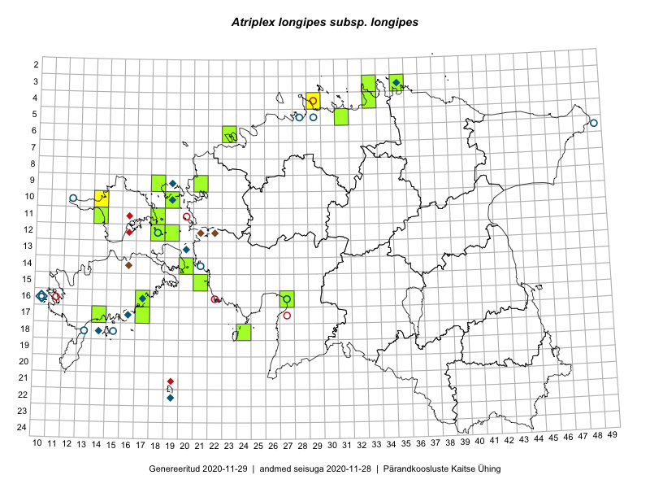

Atriplex longipes subsp. longipes — väike malts
Kaardile koondatud taksonid: Atriplex longipes subsp. longipes Drejer (11); Atriplex longipes Drejer (6)

Kaart põhineb 17 kirjel, neist:
vaatlusi 3
eksemplare 14
Kaasaegsed1 leiukohad asuvad 13 ruudus.
Andmed “Eesti taimede levikuatlasest”,2 sulgudes ruutude arv:3
● 1971–2005 (11)
○ 1921–1970 (8)
△ kuni 1920 (0)
+ hävinud (0)
? kaheldav (0)
Lisaruudud teistest andmebaasidest:4
ELF: 2006– . . . (0)
PKÜ: 2006– . . . (0)
ELF: 1971–2005 (0)
PKÜ: 1997–2005 (3)
| Ruut | Vaatleja(d) | Vaatlusaeg | Kirje PlutoFis |
|---|---|---|---|
| 09-21 | Kadi-Liis Kesler, Tõnu Ploompuu | 2015-07-14 | ruut/ala: Atriplex longipes subsp. longipes Drejer |
| 10-14 | Sander Laherand, Toomas Kukk, Nele Jõessar | 2016-08-09 | ruut/ala: Atriplex longipes subsp. longipes Drejer |
| 04-29 | Sander Laherand, Tõnu Ploompuu, Nele Jõessar | 2016-07-25 | ruut/ala: Atriplex longipes subsp. longipes Drejer |
| 18-24 | Peedu Saar, Ott Luuk | 2016-09-21 | TAA0134026: Atriplex longipes Drejer |
| 05-31 | Toomas Kukk, Sander Laherand | 2016-08-30 | TAA0136268: Atriplex longipes subsp. longipes Drejer |
| 11-14 | Thea Kull, Peedu Saar | 2016-08-09 | TAA0139381: Atriplex longipes Drejer |
| 12-18 | Toomas Kukk | 2017-09-09 | TAA0141915: Atriplex longipes subsp. longipes Drejer |
| 10-19 | Meeli Mesipuu, Ott Luuk | 2016-09-15 | TAA0144097: Atriplex longipes Drejer |
| 14-20 | Toomas Kukk | 2018-09-19 | TAA0146179: Atriplex longipes subsp. longipes Drejer |
| 12-18 | Toomas Kukk | 2018-09-16 | TAA0146215: Atriplex longipes subsp. longipes Drejer |
| 12-19 | Toomas Kukk, Tiit Hallikma | 2018-08-30 | TAA0146255: Atriplex longipes subsp. longipes Drejer |
| 15-21 | Peedu Saar | 2018-09-18 | TAA0146789: Atriplex longipes Drejer |
| 14-20 | Peedu Saar | 2018-09-19 | TAA0146793: Atriplex longipes Drejer |
| 06-23 | Peedu Saar | 2018-07-05 | TAA0146796: Atriplex longipes Drejer |
| 04-33 | Toomas Kukk, Peedu Saar | 2018-08-08 | TAA0146363: Atriplex longipes subsp. longipes Drejer |
| 04-33 | Toomas Kukk, Peedu Saar | 2018-08-08 | TAA0146363.dupl: Atriplex longipes subsp. longipes Drejer |
| 09-21 | Kadi-Liis Kesler, Tõnu Ploompuu | 2015-07-14 | TAA0148300: Atriplex longipes subsp. longipes Drejer |
Kaasaegsed leiukohad (tähistatud värvitud ruutudega) põhinevad peamiselt 2014–2019 välitööandmetel. Väiksemal määral on andmebaasi kantud vanemaid leiuandmeid aastatest 2006–2013.↩︎
Kukk, T., Kull, T., Eesti taimede levikuatlas. Eesti Maaülikool, Põllumajandus- ja Keskkonnainstituut, Tartu, 2005.↩︎
NB! 2005. aasta atlase andmestikus katavad uuemad leiud vanemaid. Näiteks kui liik on ruudus registreeritud 1971–2005, siis pole võimalik öelda, kas ta oli sellest ruudust teada ka enne 1970. aastat. Vana atlase andmetel hävinud ja kaheldavaid leiukohti pole hilisemate (taas)leidude põhjal korrigeeritud.↩︎
Eestimaa Looduse Fondi (ELF) ja Pärandkoosluste Kaitse Ühingu (PKÜ) andmebaasid sisaldavad inventeeritud koosluste kirjeldusi ja liigiloendeid. Neist andmekogudest on kaardile lisatud lisatud vaid need ruudud, millest uue atlase andmekogus taksoni kohta kirjeid veel pole. Kõrvale on jäetud teadaolevalt kaheldavad määrangud. Kaartidel katavad uuema perioodi andmed vanemaid, PKÜ omad ELFi omi. Kattumise tõttu võib kaardil näha olla vähem mingi kategooria ruute kui legendis olev arv näitab. ELFi ja PKÜ andmed ei kajastu hetkel vaatluste tabelis ega ruutude liigiloendites.↩︎